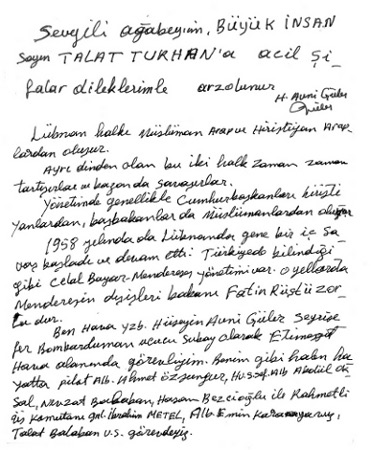

Genç Osman’ın İlkeleri (1622)
• Yeniçeri ve Sipahi ocakları kaldırılıp yerlerine Anadolu, Suriye, Mısır’da Türkler ile Türkmenlerden oluşan bir ordu kurulacak.
• Din adamı sınıfı devlet idaresinden uzaklaştırılacak. Din ocağı haline getirilecek.
• Harem tasfiye edilecek, saray gelenekleri değiştirilerek, hanedanın Türk ailesinden nikâhlı kız almaları yolu açılacak.
• Fatih ve Kanuni yasaları yeni şartlara uygun olarak değiştirilecek.
• Başkent İstanbul’dan Anadolu’ya taşınacak, gayri milli bir çevreden milli bir çevreye nakledilecek.
• Kıyafette yenilikler yapılacak.
Kaynak: Lamartine, Osmanlı Tarihi, cilt 2 s. 608–692.
 H. Avni Güler’in Talat Turhan’a Mektubu (25 Mart 2011)
H. Avni Güler’in Talat Turhan’a Mektubu (25 Mart 2011)
Sevgili ağabeyim, büyük insan, Sayın Talat Turhan’a acil şifalar dileklerimle arz olunur.
Lübnan halkı Müslüman Arap ve Hıristiyan Araplardan oluşur.
Ayrı dinden olan bu iki halk zaman zaman tartışırlar ve bazen de savaşırlar.
Yönetimde genellikle cumhurbaşkanı Hıristiyanlardan, başbakanlar da Müslümanlardan oluyor.
1958 yılında da Lübnan’da gene bir iç savaş başladı ve devam etti. Türkiye’de bilindiği gibi Celal Bayar-Menderes yönetimi var. O yıllarda Menderes’in dışişleri bakanı Fatin Rüştü Zorlu’dur.
Ben Hava Yzb. Hüseyin Avni Güler seyrüsefer bombardıman uçucu subayı olarak Etimesgut Havaalanında görevliyim. Benim gibi halen hayatta Pilot Alb. Ahmet Özserengur, Hv. S. Şef. Alb. Abdül Oksal, Nevzat Balaban, Hasan Bezcioğlu ile rahmetli üs komutanı Gen. İbrahim Metel, Alb. Emin Karayağız, Talat Balaban vs. görevdeyiz.
Gizli bir emirle Menderes-Celal Bayar yönetimi, Lübnan’a yardıma karar verdi ki Etimesgut’tan uçaklar dolusu malzemeleri Beyrut Havaalanı’na tarifesiz korsan uçuşuyla götürüyorduk.
Dışişleri Bakanı Fatin Rüştü Zorlu meydana geliyor, uçaklara sandıklar yükleniyor, dolu sandıklarda yükümüzün ne olduğunu bilmiyoruz. Soranlara yiyecek içecek diye cevap veriyorlar.
Lübnan’a uçarken Kıbrıs üzerinden geçiyoruz. Kıbrıs o tarihlerde İngilizlerin elinde. Kıbrıs üzerine geldiğimizde Victoria parolasını veriyoruz geçiyoruz. Beyrut Havaalanı’na iniyoruz. Bize birer sandviç ve kola veriyorlar. Uçağımıza yakıt ikmali yapılıyor, Lübnan’daki Ermeniler tarafından yakıt deposuna şeker vesaire atılmaması için uçağın başında nöbet tutuyoruz ve Etimesgut’a dönüyoruz. Ben beş sefer gittim Beyrut’a, Etimesgut’tan seksen beş (85) uçak dolusu malzeme gitti Lübnan’a. Binbaşı Rıza Kalaycıoğlu (bir uçak kazasında şehit oldu) komutasındaki bir uçağımız Beyrut Havaalanı’na inince havaalanı Müslümanların eline geçtiğinden uçağımızı ve ekibini esir aldılar. O zaman anladık ki biz hükümetimizin emriyle Hıristiyanlara silah, teçhizat götürmüşüz. Savaşta Müslümanların belki de binlercesinin ölümüne yardım etmiş oluyoruz ve kendimizi suçlu görüyoruz.
Menderes hükümeti kendisini halka Müslüman milliyetçi, mukaddesatçı olarak tanıttığına bütün Türk milleti şahit.
Ayrıca, Cezayir halkı Fransızlara karşı bağımsızlık savaşı verdiğini bildiği halde utanmadan Menderes-Celal Bayar yönetimi Birleşmiş Milletler’de Fransızları desteklemişti.
Bayar-Menderes-Fatin Rüştü Zorlu’nun dışında o zaman kimsenin bilmediği bu konu yasalara göre TBMM’den, Bakanlar Kurulu’ndan geçirilmesi lazımken bu görevler yapılmamıştır. Adı geçen üç yönetici anayasal suç işlemişlerdir.
 Hüseyin Avni Güler
Hüseyin Avni Güler
27 Mayıs Milli Devrim Derneği Genel Başkanı
Em. Hv. Kd. Alb.
12 Ekim 1996 günü bir basın toplantısı düzenledim. Em. Hv. Alb. H. Avni Güler’le bağlantı kurup yukarıda yer alan görüşlerini basın mensuplarına duyurdum. Ama basın “üç maymun”u oynadı, açıklanan tarihi gerçekler kamuoyundan saklandı. Bu kez H. Avni Güler’den bir mektupla görüşlerini açıklamasını istedim. Beni kırmadı, bu tarihi tanıklığı için kendisine teşekkür ederim.

Hüseyin Avni Güler’in Talat Turhan’a yazmış olduğu mektup